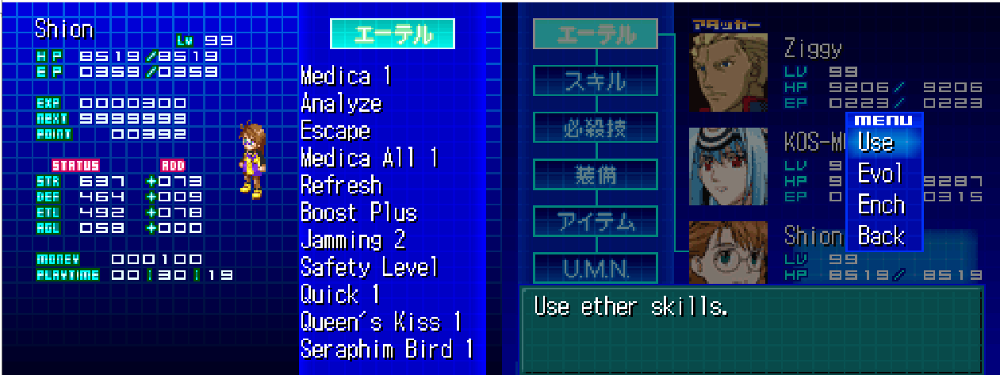
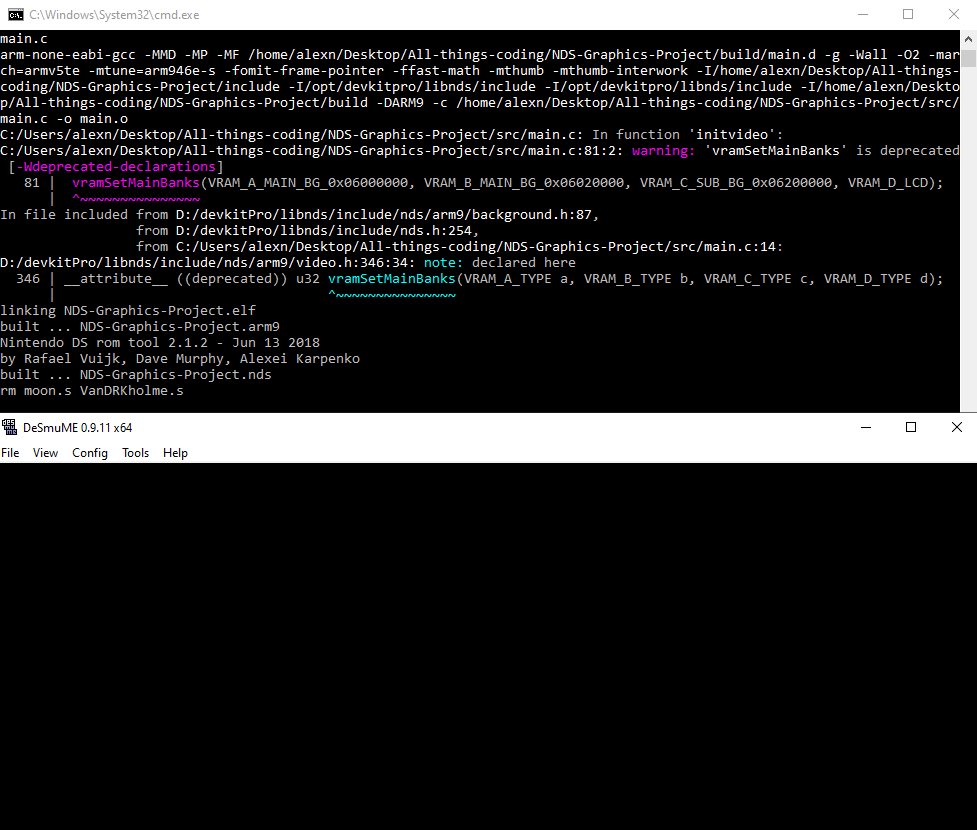
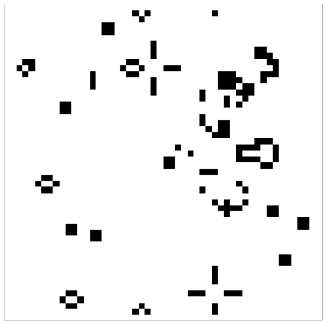
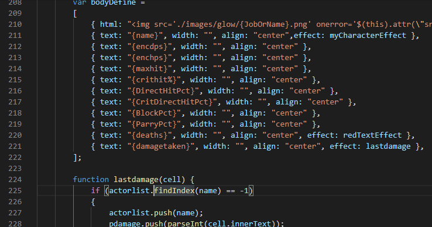
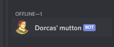
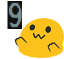

As of currently, a basic menu translation to NDS game Xenosaga 1&2 which was only released in Japan.
Shift-JIS encoding. Translation needs to be exactly the length of original or text will break. Luckily JP characters are 2 bytes long so コスモス can be changed to KOS-MOS with extra character at end.
Unfortunately, like picture below, I need to make compromises if original is way too short.
The text is no problem (although the story is high in volume) but the format of graphics remain a mystery so far. Because of this I can't translate the menu itself.
Instead of text, the menu is a graphic layer consisting multiple images. When you hover over a option, the palette changes every frame which creates the flashing effect.
Using libary called "libnds" this is somewhat a testrun to make game/program for Nintendo DS. Ultimate aim would be to port FDF/Fract'ol/Wolf3D to NDS using this library.
So far it's been like walking leg deep swamp. It doesn't help a lot of emulators have issue with self signed code so I need to physically transfer files to my 3DS to test things. This process takes over 2 minutes everytime I need to do it.
Just a small fun project making a version of "Game of life" using Minilibx.
I did this in Java back when I was in Uni. I saw a random YouTube video about the matter not too long ago and that inspired me to do this.
Basically I'd have 250x250 tileset in 1000x1000 screen and everything can be alive or dead and I's just slap MLX images to screen depending on character state.
Output below is not result of my own code but it's something it should look like when it's done.
Can I not be lazy thanks?
Toxic parser :^)
An attempt of making my own overlay for ACT for Final Fantasy XIV. Currently uses RandbowMage as base but I'd like to make my own standalone version at some point.
Javascript is not very nice tbh, but HTML/JS is what I need to use for this.
Currently I'm trying to implement a feature which tracks the last hit taken. XIVplugin doen't do this so I'm using the data I have available.
Issue is that I need to track # of player amount of instances of data and I don't know which player is which so I need to find a proper way to get around that.
A simple general purpose bot for variety of uses. Can check if Minecraft server is up and output playercount to it's own status or chat as reply.
Rando links
